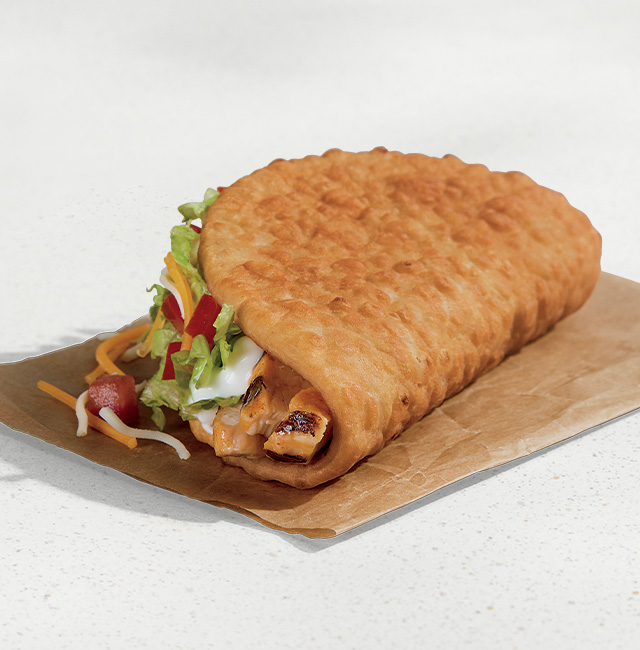

Chicken-chalupa

Description
Chalupa is a popular Mexican dish made with a crispy, fried flatbread
shell filled with seasoned meat, vegetables, cheese, and sauces. A Chicken
Chalupa uses spiced chicken as the main filling. It is crunchy on the
outside and soft and flavorful on the inside.
Ingredients
For the Chicken Filling:
- 1 cup cooked, shredded chicken
- 1 teaspoon chili powder
- 1/2 teaspoon cumin powder
- 1/2 teaspoon garlic powder
- Salt to taste
- 1 tablespoon oil
For the Chalupa Shell:
- 1 cup all-purpose flour
- 1/2 teaspoon baking powder
- A pinch of salt
- 1 tablespoon oil
- Water (to make dough)
- oil for frying
Toppings:
- shredded lettuce
- Diced tomatoes
- Grated cheese
- Sour cream
- Salsa
Steps:
-
To prepare the chicken, heat oil in a pan. Add shredded chicken. Add
chili powder, cumin, garlic powder, and salt. Cook for 3–4 minutes until
well mixed. Set aside.
-
Now let's make the chalupa shell. Mix flour, baking powder, salt, and
oil. Add water slowly and knead into soft dough. Divide into small balls
and roll into small flat circles. Fry in hot oil until golden and
slightly puffy.
-
Assemble the chalupa by placing chicken inside the fried shell. Add
lettuce, tomatoes, cheese, sour cream, and salsa. Serve immediately
while crispy.Enjoy your homemade Chicken Chalupa!